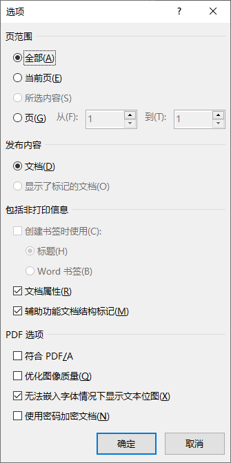

PDF（Portable Document Format）是一种用独立于应用程序、硬件、操作系统的方式呈现文档的文件格式，是当今最为常用的一种文档格式。这种格式最初为 Adobe 公司所控制的专有格式，直到 2008 年 7 月 1 日才被官方以开放标准发行，并由国际标准化组织以 ISO 32000-1:2008 发布。现而今，支持 PDF 格式的程序非常多，其中，支持最好的自然是 Adobe 系列的 Reader 或 Acrobat，前者是免费授权使用，功能有限，仅能够进行阅读、注释；后者提供了丰富的编辑功能，包括加密文件、抽取、合并文件，图像截取、转换格式等等，但需要获得商业授权。实际上，LaTeX 发行版 TeXLive 提供了丰富的自由软件和程序来实现 Acrobat 的部分功能。本文将做一些简单的介绍。
文件的加密
在 tex 文件编译过程中进行加密
实际上很多程序在导出 PDF 格式的选项中均提供了加密这一项功能。例如 Microsoft Word 在导出 PDF/XPS 时可以通过 选项 按钮弹出下图所示对话框。

勾选 使用密码加密文档 即可。不过这种加密方式提供的权限设置非常少，并且权限不分级，功能形同鸡肋。
使用 LaTeX 撰写文档并生成 PDF 文件时，可以通过 Knuth 在 TeX 里留的一个后门：\special 命令来让后面的驱动完成这些工作（牛人就是牛）。这条命令一般放在 \documentclass 之前，对于文档加密来说，命令的格式为：
1 | \special{pdf:encrypt userpw (<userpassword>) ownerpw (<ownerpassword>) length <num1> perm <num2>} |
简单解释一下几个参数：
<userpassword>填写用户密码，提供打开阅读权限，一般可以留空，文章写了总是给人看的，除非是特别机密的文件，才有设置的必要；<ownerpassword>填写拥有者密码，用于提供权限解除其他限制；<num1>加密键长度，必须为 40～128 之间的 8 的倍数或 256，默认为 40；<num2>加密标识，这是一个 32 位无符号整数转化的十进制数；各数位含义为：
| 数位 | 含义 |
|---|---|
3 |
允许打印文档 |
4 |
允许除 6、9、11 位控制的其他修改操作 |
5 |
允许从文档中复制文字和图形 |
6 |
允许添加修改文字注释，创建和填写表单（表单操作 4 位也可以控制） |
9 |
允许填写现有的表单字段（包括签名字段） |
10 |
支持文字和图形的提取（针对有障碍用户的可访问性或用于其他目的）PDF 2.0 中已弃用 |
11 |
允许重组文件，如插入页面、删除页面、旋转页面、提取页面等。不受 4 位的控制。 |
12 |
允许高质量打印，如果此位清除，仅设置 3 位，将以低质量方式打印。 |
如果希望文档仅仅允许高质量打印，则 12 位与 3 位应设置为 1，其余位设置为 0，即 100000000100，该数值转化为十进制数即为：2052；假定加密键长度为 128，用户密码留空，所有者密码为 mypassword，则编译文档中这条命令应写成为： |
1 | \specail{pdf:encrypt userpw () ownerpw (mypassword) length 128 perm 2052} |
文件加密也可以通过 xdvipdfmx (或 dvipdfm(x)) 命令参数实现，编译命令为：
1 | xdvipdfmx -S -K <num1> -P <0xNUM2> file.xdv |
这里 <num1> 与前相同，<0xNUM2> 则需要将 <num2> 转换为 16 进制表示，并且，该命令只能对 dvi 或 xdv 文件使用，命令使用时需要在命令行交互输入用户和拥有者密码，相对比较麻烦。
对既有 pdf 文件进行加密
上述方法是在撰写文档时对文档进行加密的方法。大多数情况下，我们是面对一个既有 pdf 文件希望对其进行加密处理，这时可以借用 pdfpages 宏包重新生成文档的方式，在编译中对其进行加密。假定加密语句同上，对于一个既有 file.pdf 文档，可以编写如下 tex 源代码：
1 | \specail{pdf:encrypt userpw () ownerpw (mypassword) length 128 perm 2052} |
编译此文档后，将生成一个加密后的文件，间接实现了加密。
多说两句
其实，pdf 文件的加密是没有太大的意义的，防君子不防小人，这些加密方法都可以通过软件去除密码，至于是什么软件程序，我这里不告诉你。
pdf 文件裁剪
pdf 文件的裁剪可以通过 TeXLive 提供的 pdfcrop 命令实现，这是一个命令行程序，其命令格式为：
1 | pdfcrop [options] <input[.pdf]> [output file] |
关于命令参数及其含义可以通过：
1 | pdfcrop --help >pdfcrophelp.txt |
输出至 pdfcrophelp.txt 后进行查阅。默认条件下，将把 pdf 文件各页的空白边完全去除，这对于从其他软件中打印出的 pdf 格式的图片处理非常有用。而且，该命令是命令行程序，非常便于批处理文件，如下一条命令即可将文件夹下所有 pdf 文件的白边全部去除。
1 | for %i in (*.pdf) do pdfcrop %i %i |
如果希望截取 *.pdf 文件中的部分图片，显然通过 Arcobat 这种 GUI 交互式软件来完成更为方便，但并不是说 pdfcrop 就不能完成这样的工作，可以通过 pdfcrop 命令选项 --margins "<left> <right> <bottom> <top>" 来实现，只要将各 margins 的参数设置为负值就能完成这项工作。margins 的上、下、左、右参数是以 bp 为单位的（），没办法，你必须自己去计算裁剪量。
pdf 转换为图片
pdf 文件向其他格式图片的转换可以通过 TeXLive 提供的 pdftocairo 命令实现，该命令利用了 Cairo 库将 pdf 文件转换成为图形文件，支持转换 png、svg、ps 等多种格式（有的版本支持转换为 jpeg 格式，但现在的 version 0.86.1 已经不支持了），比如你需要将一个 pdf 格式的矢量图转换成 svg 格式的矢量图，使用的命令为：
1 | pdftocairo -svg <filename>.pdf [<output-file>] |
<filename>.pdf 同目录下将生成同名或指定名称的 svg 文件。
关于 pdftocairo 的其他用法可以通过：
1 | pdftocairo --help |
进行查阅。
pdf 添加、拆离附件
pdf 文档本身能够携带其他文件格式的附件，这个功能恐怕很多人都不知道。在一份文档需要绑定一个其他格式文件的时候，将多个文件打包在一起固然是一种方法，更方便的方法是直接将文件作为附件添加到 pdf 文档，这样就不需要进行多个文件压缩、传送、再进行解压、阅读查看了。实现这个功能的程序是 pdfattach 程序，其命令格式为：
1 | pdfattach [options] <input-PDF-file> <file-to-attach> <output-PDF-file> |
命令参数 [options] 可以通过：
1 | pdfattach --help |
进行查看，常用的参数只有一个，即 -replace，当文件中已经存在同名附件时不能再次进行添加，需要使用此参数进行替代，或者更名后添加。
嵌入的附件在多数浏览器中都可以查看和下载，比较奇怪的是，Adobe Reader 只支持由自身打开另存这种方式下载，因此很多格式的附件无法析出。这时需要用到另一个程序 pdfdetach 进行拆离。这个命令的格式是：
1 | pdfdetach [options] <PDF-file> |
我们可以通过：
1 | pdfdetach -list filename.pdf |
来查看 filename.pdf 文件中嵌入的附件，命令行会将嵌入文件与其编号回显在命令行中：
1 | 2 embedded files |
这时，我们就可以使用：
1 | pdfdetach -savefile te.svg filename.pdf |
或
1 | pdfdetach -save 1 filename.pdf |
就可以将第 1 个文件 te.svg 拆离保存下来。
pdfdetach 命令的其他参数 [options] 可以通过：
1 | pdfdetach --help |
进行查看。
pdf 文件拆分
pdfseparate 可以将给定的 pdf 文件逐页另存为一个单独的文件。其命令格式为：
1 | pdfseparate [options] <PDF-sourcefile><PDF-pattern-destfile> |
命令参数 [options] 可以通过：
1 | pdfseparate --help |
进行查看，常用参数仅有 -f、-l 两个参数，指定需要分离的起始页数。 <PDF-pattern-destfile> 中需要给出 %d，用以在文件名表达相应的页数，如：
1 | pdfseparate -f 5 -l 7 a.pdf a-%d.pdf |
则将 a.pdf 的第 5～7页分别提取，另存为 a-5.pdf、a-6.pdf、a-7.pdf。
pdf 文件合并
将既有的 pdf 文件合并的程序是 pdfunite，其命令格式为：
1 | pdfunite [options] <PDF-sourcefile-1>..<PDF-sourcefile-n> <PDF-destfile> |
这里，需要把要合并的 pdf 文件依次排列，在命令末尾指定合成的文件即可。注意，不要忘记末尾指定合成的文件，否则，最后一个文件不会被合并，反而会被其他文件合成后覆盖。
对于数量众多的文件进行合并，文件顺序必须自行进行排列，熟悉命令行批处理脚本或 perl、python 也可以自行编写一些简单的脚本运用。